단지를 설정해 주세요
매매 매물만 집계합니다.
매물 추이 그래프
데이터가 쌓이면 그래프가 표시됩니다.
실거래 가격추이
실거래 기록이 쌓이면 그래프가 표시됩니다.
값 표로 보기
평형별 매매 매물 증감
| 평형 | 이전 | 오늘 | 증감 | 평균호가 | 실거래 평균가 최근 10일 |
|---|---|---|---|---|---|
| 아직 데이터가 없습니다. 단지 번호를 넣고 “오늘 매물 갱신”을 눌러주세요. | |||||
| 합계 | – | – | – | ||
건수를 누르면 그날 매물 목록이, 증감(▲▼)을 누르면 새로 올라오거나 사라진 매물이 보입니다.
실거래 목록
| 거래일 | 평형 | 층 | 거래가 | 직전 거래 대비 | |
|---|---|---|---|---|---|
| 실거래 목록은 다음 “오늘 매물 갱신” 때부터 표시됩니다. | |||||
거래일 기준 최근 60일 매매 실거래(국토부 신고분, 네이버·호갱노노 제공)입니다. 실거래는 계약 후 최대 30일 내 신고되므로 신규 신고는 직전 수집 이후 새로 공개된 거래입니다.
동탄트램 최신 기사
동탄 소식
개선·문의 보내기
보낸 글은 이 사이트에 저장·공개되지 않고 관리자 메일로만 전달됩니다.
매물 추적기 사용법
동탄역포레너스의 매매 매물 수와 실거래가를 매일 기록해, 시장이 어느 쪽으로 움직이는지 한눈에 보여주는 화면입니다. 데이터는 네이버 부동산에서 30분마다 자동으로 모읍니다. PC와 휴대폰 어디서나 같은 주소로 볼 수 있습니다.
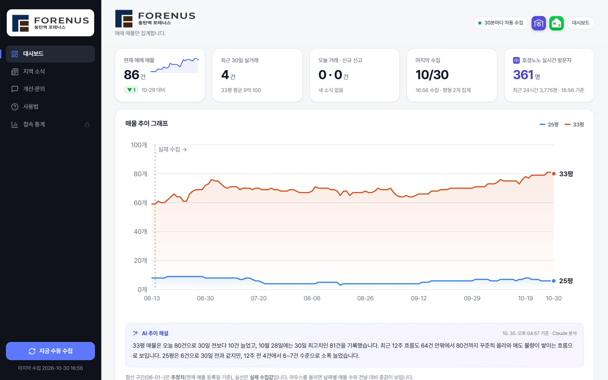
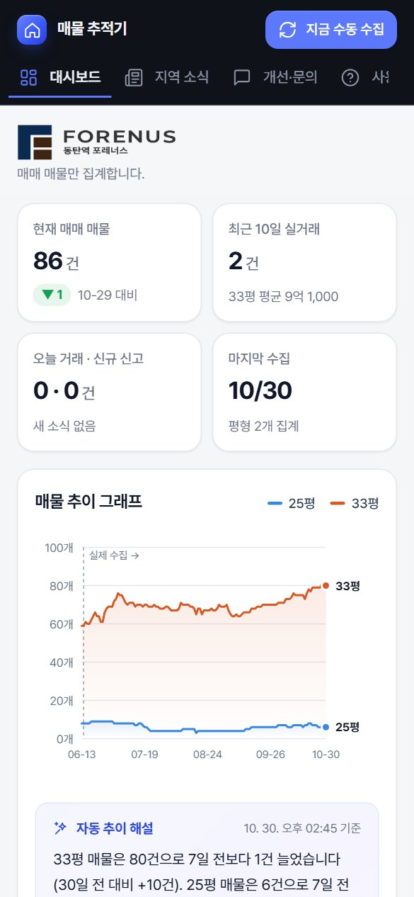
1맨 위 숫자 칸
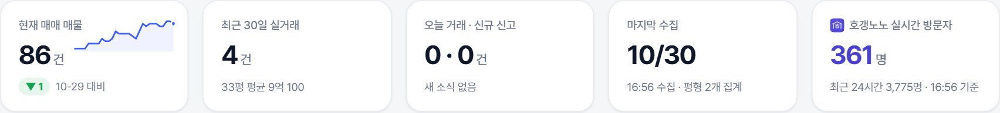
- 현재 매매 매물
- 오늘 등록된 전체 매매 매물 수입니다. 아래 알약 모양이 전일 대비 증감, 오른쪽 작은 선은 최근 30일 흐름입니다.
- 최근 30일 실거래
- 최근 30일 동안의 실거래 건수(해제 건 제외)와, 거래가 가장 많은 평형의 평균가입니다.
- 오늘 거래 · 신규 신고
- 오늘 계약된 거래와 직전 수집 이후 새로 공개된 거래 수입니다. 누르면 실거래 목록으로 이동합니다.
2매물 추이 그래프
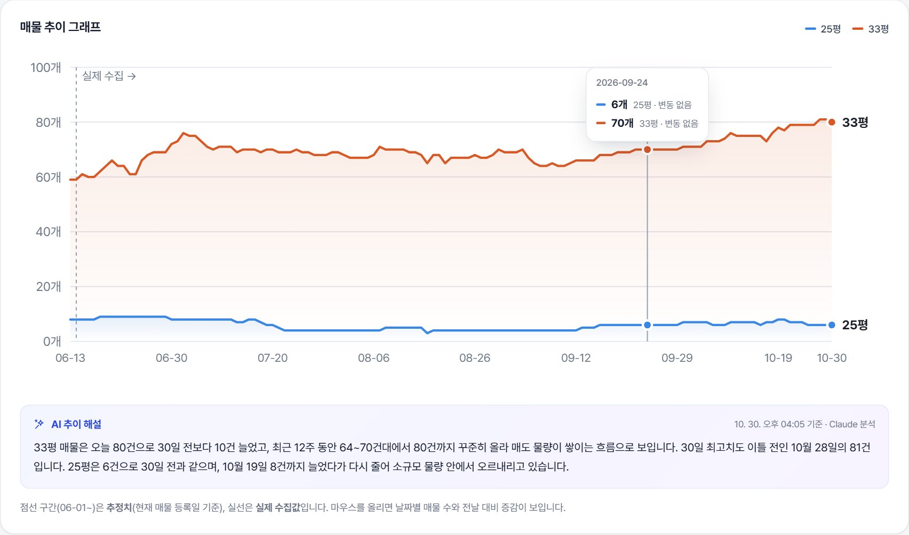
- 읽는 법
- 평형별 매물 수의 하루하루 변화입니다. 오른쪽 끝 이름표가 평형입니다. 매물이 늘면 매도 물량이 쌓이는 것, 줄면 거래·소진되는 것으로 볼 수 있습니다.
- 마우스 올리기 · 터치
- 세로선과 팝업으로 그날의 평형별 매물 수와 전날 대비 증감이 나옵니다. PC에서는 그래프를 누른 뒤 ← → 키로도 옮길 수 있습니다.
- 점선 구간
- 수집을 시작하기 전 기간이라 매물 등록일로 거꾸로 추정한 값입니다. "실제 수집 →" 이후가 실제 값입니다.
- AI 추이 해설
- 그래프 아래 상자에 AI(Claude)가 최근 흐름을 숫자와 함께 2~3문장으로 풀어 줍니다. 실거래 가격추이 아래에도 같은 해설이 있습니다. 자동 수집(30분마다)이나 수동 수집을 할 때마다 AI가 새로 분석하고, 오른쪽 위에 분석 시각이 나옵니다.
3실거래 가격추이
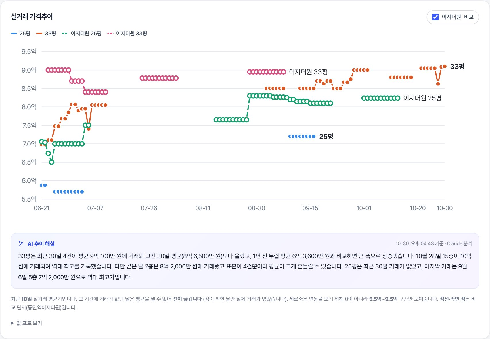
- 읽는 법
- 최근 10일 실거래 평균가입니다. 그 기간에 거래가 없던 날은 평균을 낼 수 없어 선이 끊기고, 점이 찍힌 날만 실제 거래가 있었습니다.
- 이지더원 비교
- 오른쪽 위 체크를 켜면 이웃 단지(동탄역이지더원)가 점선·속빈 점으로 함께 그려집니다.
- 값 표로 보기
- 그래프 아래 "값 표로 보기"를 펼치면 날짜별 숫자를 표로 볼 수 있습니다.
4평형별 매매 매물 증감
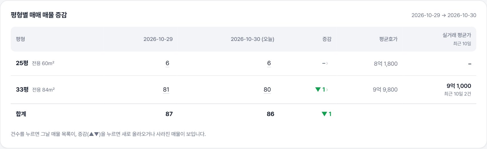
- 표
- 전일과 오늘의 평형별 매물 수, 증감, 평균 호가, 최근 10일 실거래 평균가입니다.
- 매물 수 숫자 누르기
- 그날 등록돼 있던 매물 목록(가격·동·층·향·중개사·등록 경과일)이 열립니다. 매물을 누르면 네이버 부동산으로 이동합니다.
- 증감 ▲▼ 누르기
- 전일 대비 새로 올라온 매물과 사라진 매물(거래됐거나 내린 매물)이 나뉘어 보입니다.
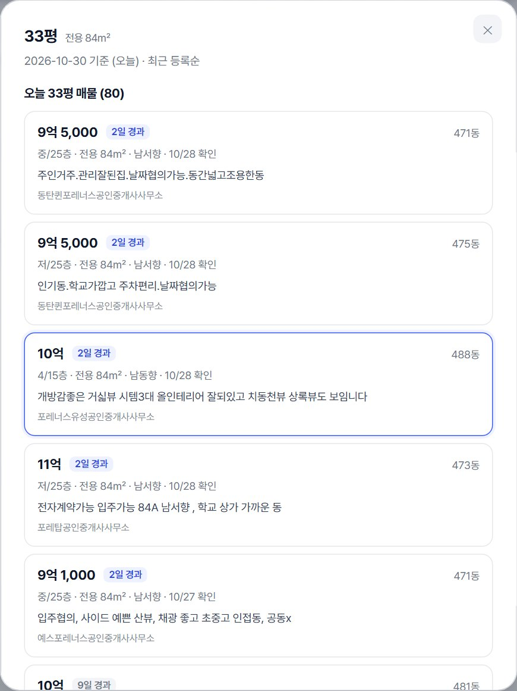
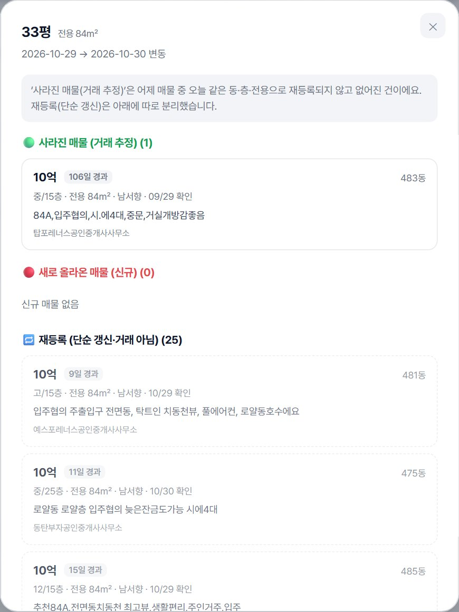
5실거래 목록
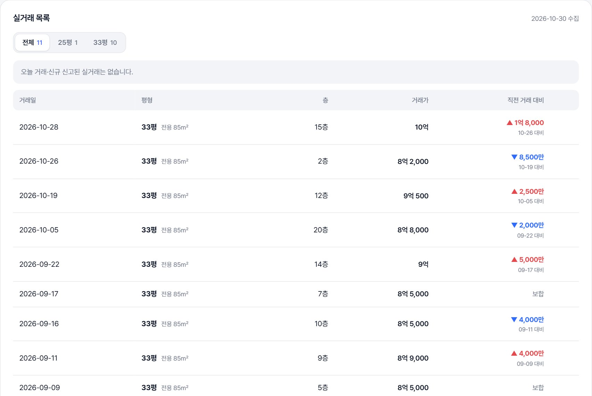
- 목록
- 최근 60일 실거래입니다. 위쪽 버튼으로 평형을 고를 수 있습니다.
- 직전 거래 대비
- 같은 평형의 바로 전 거래보다 얼마나 올랐는지(▲ 빨강) 내렸는지(▼ 파랑) 보여줍니다.
- 표시
- 오늘 거래 오늘 계약, 신규 신고 직전 수집 이후 새로 공개(실거래는 계약 후 최대 30일 안에 신고), 해제 계약 취소입니다.
- 전체 펼치기
- 목록 아래 버튼을 누르면 2016년 분양권 거래부터 전체가 100건씩 나옵니다.
6데이터 갱신 · 수동 수집
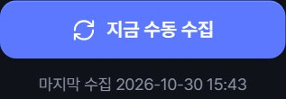
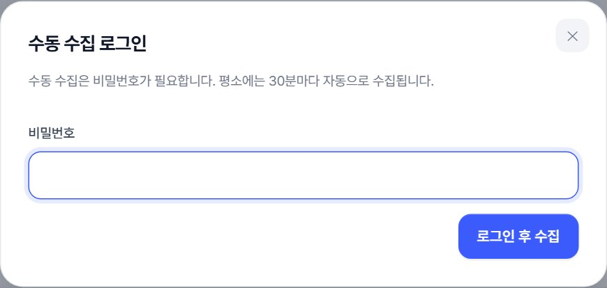
- 자동 수집
- 관리자 PC가 켜져 있으면 30분마다 자동으로 수집해 이 페이지에 반영합니다. 위쪽 초록 점(30분마다 자동 수집)이 그 표시입니다.
- 수동 수집
- 왼쪽 아래(휴대폰은 오른쪽 위) 지금 수동 수집을 누르고 관리자에게 받은 비밀번호를 넣으면 바로 수집합니다. 한 번 맞히면 그 창을 닫기 전까지 다시 묻지 않습니다.
- 제한
- 네이버 요청 제한을 피하려고 수동 수집은 10분에 한 번만 됩니다. 비밀번호를 5번 틀리면 15분 동안 막힙니다.
7지역 소식
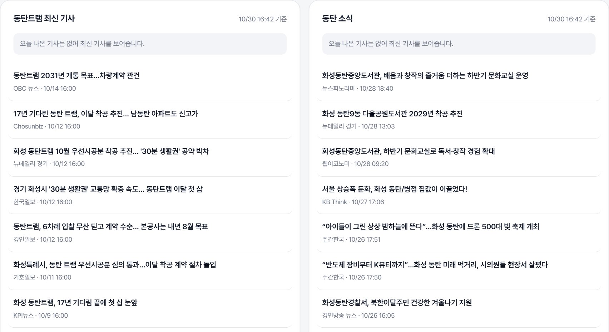
- 기사 목록
- 왼쪽은 동탄트램, 오른쪽은 동탄 관련 최신 기사입니다. 분양 광고성 기사와 같은 보도자료 중복은 걸러냅니다.
- 읽기
- 제목을 누르면 기사 원문으로 이동합니다. 오늘 나온 기사가 있으면 위에 따로 표시됩니다.
8개선·문의
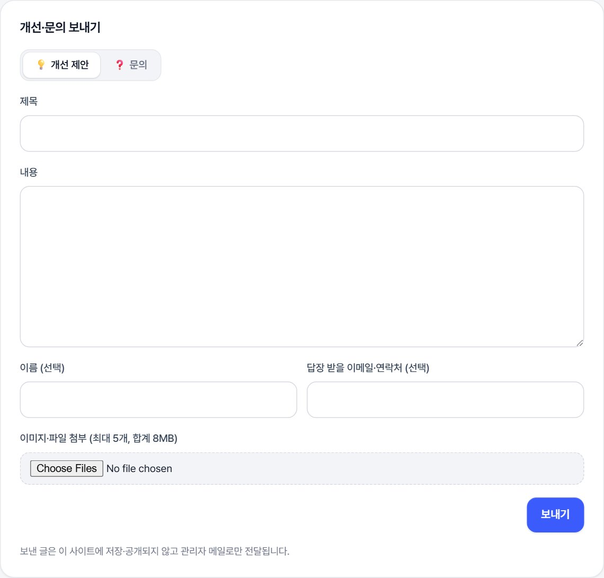
- 보내기
- 분류(개선 제안/문의)를 고르고 제목과 내용을 적어 보내기를 누르면 관리자 메일로 전달됩니다.
- 첨부
- 이미지·파일은 5개, 합계 8MB까지 붙일 수 있습니다.
- 답장
- 답장을 받고 싶으면 이메일을 적어 주세요. 보낸 글은 사이트에 저장·공개되지 않습니다.
!참고
네이버 부동산·호갱노노 데이터를 비공식으로 모은 것이라 실제와 다를 수 있습니다. 관리자 PC가 꺼져 있으면 자동 갱신·수동 수집·문의 발송이 잠시 멈춥니다. 개인 참고용으로만 활용해 주세요.
최근 30일 방문 추이
방문자페이지뷰많이 본 메뉴
유입 경로
시간대별 방문
기기
IP별 접속 횟수
최근 30일 · 많은 순| IP | 접속 횟수 | 접속한 날 | 마지막 접속 |
|---|
접속 횟수는 페이지(메뉴)를 연 횟수입니다. 같은 집·회사 와이파이나 휴대폰 통신사망은 여러 사람이 같은 IP로 보일 수 있습니다.
최근 방문 기록
| 시각 | 방문자 | IP | 본 메뉴 | 기기 | 유입 경로 |
|---|
공개 페이지 방문만 셉니다(PC에서 연 화면 제외). 같은 브라우저는 같은 방문자로 세고, IP는 최근 방문 기록 50건에만 남깁니다. PC 서버가 꺼져 있던 동안의 방문은 기록되지 않습니다.
관리자 전용 화면입니다
접속 통계는 관리자 비밀번호로 로그인해야 볼 수 있습니다.
단지 설정
단지 번호 찾기: new.land.naver.com 접속 → 단지 검색 → 주소창의
/complexes/숫자 가 번호입니다.